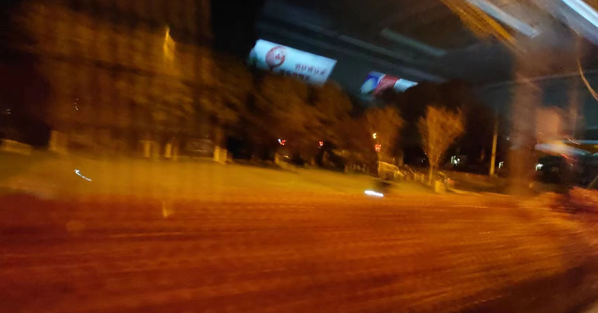

是啊，谁不喜欢凌晨的桥头堡呢？
本该在一个月之前动笔的。但是兜兜转转，我实在不知道应该说些什么。
但是生活向来喜欢不讲道理的玩笑，不知为何这个月的我三番五次陷入同样的境遇，我实在是没有办法对此视而不见。Anyway，是时候动笔了，即使写得连自己都看不下去。
这篇文章本来有一个相当文艺的开头。
是啊，谁不喜欢凌晨的桥头堡呢？

我很少凌晨回家。这也完全是我的原因，我习惯了稳定，不擅长出门，更不擅长道别。多年之前的那次匆匆的告别让我至今难以忘怀，这或许也是我不善于假借外力的原因 —— 我实在没法放心。从那天起，我一直习惯于跟随自己的节奏，这让我很难被外界影响。但是当与这个世界交往怎么可能一直孑然一身？但你满怀着对世界的善意打开 A.T.Field 的时候，总归还是希望投下的那束光是世界的善意。
而不是别的什么东西。
凌晨结束回忆的我毅然决然还是决定回家，一半是出于我确实没有坐过支持起这座城市另一半时域脉搏的夜班公交。还有一半更简单了，我不愿让难得且难忘的冲动心和成就感被莫名其妙的负面情绪打断，我想逃离那里，逃离那个场域。
你见过凌晨 3 点的南京城嘛？
这是我熟悉的街道，这条街道充满回忆，但此时也披上了一层我从未感受过的光辉。流动的市井气不见之后，它显露出了我从未见到过的「神情」。城市是有性格的，我从未见过这样的南京城，更何况南京城在我眼中从没有拥有过夜晚。晚间是年轻人的游戏，但是对于我来说，此刻，时间才刚刚开始流动。
这是只属于我一人的夜间旅行。
第一次城市历险，其实真的有点兴奋。半夜道路养护的人变多了，代驾小哥放下了自己的折叠电瓶车和我坐在了一起，整个小区只有一户亮着灯，肯德基真的是很多人的家，空气里有啤酒的味道。和朋友肆意海聊，即使在美国的他和我也拥有了同样的时间。
这城市正以我完全未知的形态活着。
这是我未曾感受过的生活，这是我完全陌生的世界。
我何曾想到会有这样一个美妙的夜晚，即使引发它的契机是如此让我意难平。
即使被迫孑然一身，我乐在其中。
生活需要处处留心，工作务必事事在意。日常向来不遂人愿。但是与人交往依旧需要真心，这绝对不是能肆意妄为的场合。不必像之前一样考虑什么兼顾，即使我在这里百无聊赖。当大家都保持距离他却依然故我，这着实需要勇气。
是啊，他们或许什么都没有做错。
但是他们却没有任何损失，损失却全在我身上。我失去了自己的时间，失去了自我的空间，失去了自尊的视线，更重要的，我失去了本该有的好心情，这让我实在是没有办法面对这样的世界。或许诚如所言，有些事情确实是不必那么较真，但那样的话，生活也太悲惨了。无论在什么地方都需要退后一步，这也并不是所谓的德行，而是沉溺。无论是任何人在任何领域，都需要摆正自己的位置。这世界太小，稍微一个不小心，就会挡到别人的阳光。
强烈的情绪时常让我惶恐，因为很容易失去判断力。我从不标榜自己年轻新知，但倒也确实不必在哪里都如此悲惨。
人与人不能一概而论，我也从未高看过自己任何一眼。当然，无论是什么情况，我当然也可以试着去挡住别人的阳光，这样或许可以扯平。但这实在是缺少风骨且难以自知，也没有必要强行把自己和对方放在一个水平线上比较，这不公平，对任何人来讲。只是我实在是难以负担这种情绪，也难以处理这种状态。但是一件对我来说非常好的事情是，我想离开我确实随时可以离开。我作为服务的受用方，我有完完全全自主的「选择的权利」，纵使每次离开都会让我感到可惜。
不是所有「存在」都能对应到「想象」，这或许算是我的自我过剩，也请不要在意。但当某些时候肆无忌惮的「想象」干扰到了其它的「存在」，这何尝不是另外一个层面的「自我过剩」，而后者的存在更无法让人省心。
昆德拉说的对：「人的处境、选择、尊严或者其他各种东西能够变成你要表达的最重要的东西之一」。
毕竟，有些人和事，看见了就烦心。我始终学不会这个教训。
举手投足一言一行都变成了对我的伤害的现在，谁又愿「紧紧怀抱我的迷惘」呢？
能有个地方疏解疏解意难平挺好的，我没有义务在轻松愉悦的场合依旧保持「矢志不渝的谦让」和「雷打不动的冷静」。
且我还想再爱豆沙包一次，它真的软糯香甜又平易近人，不烫嘴，还便宜。
总之，欢迎回家。